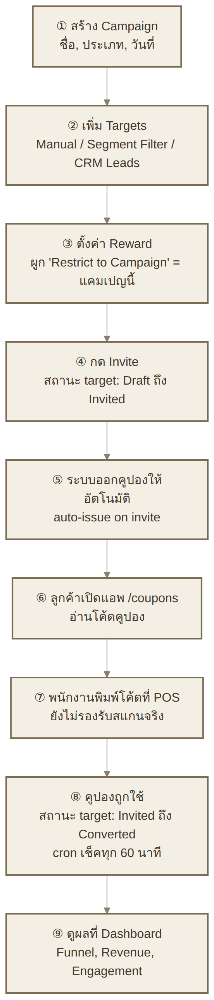
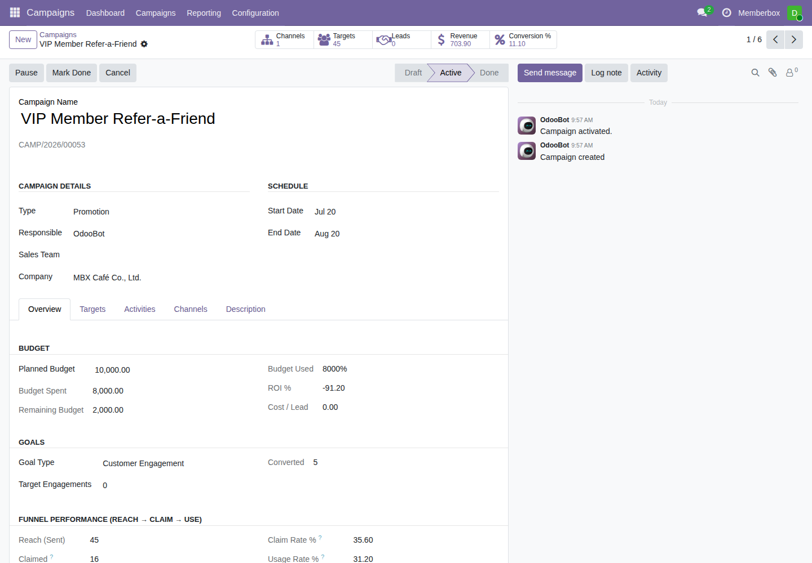
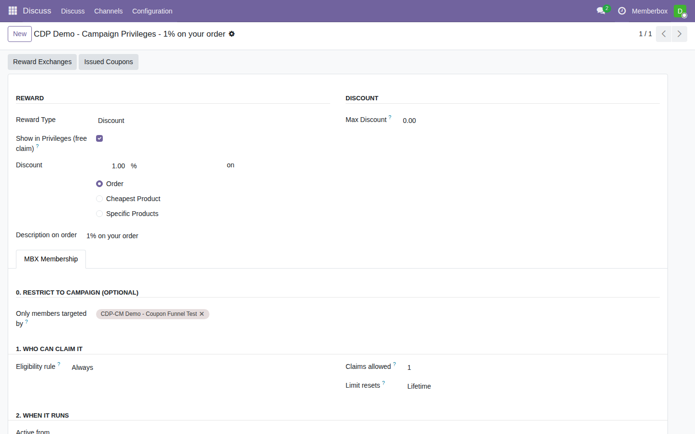
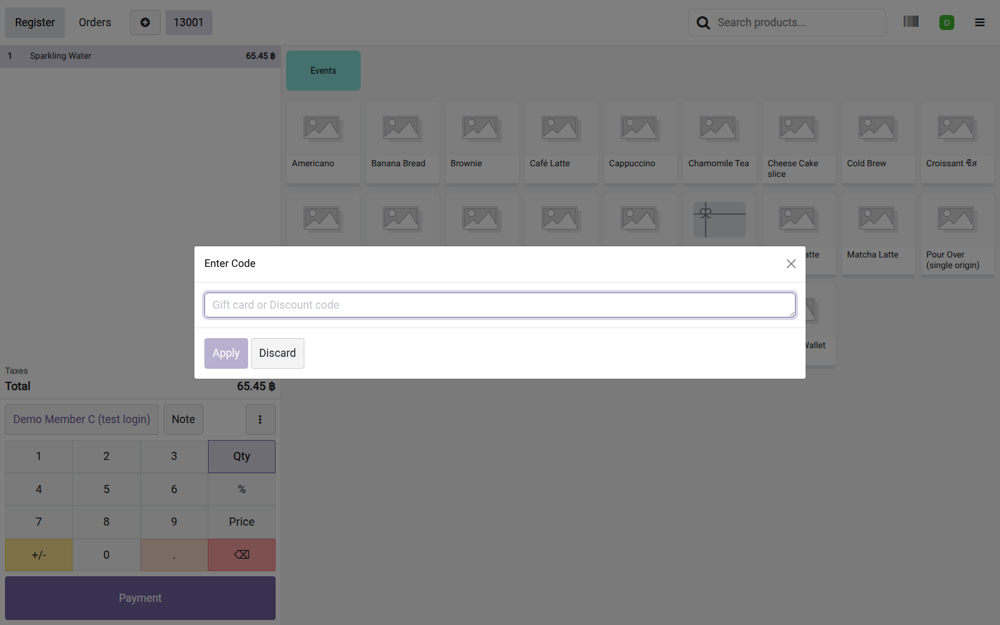
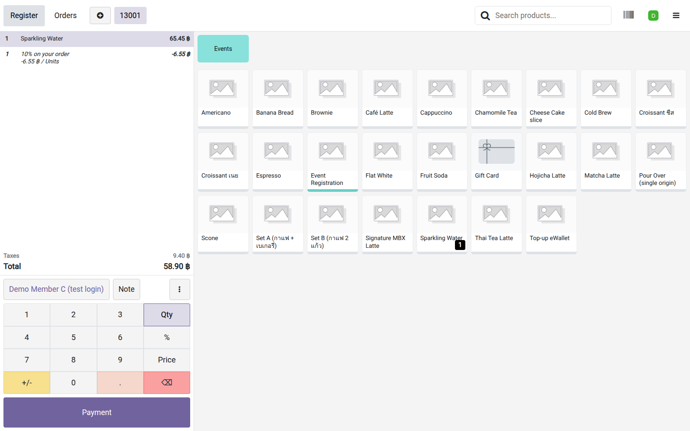
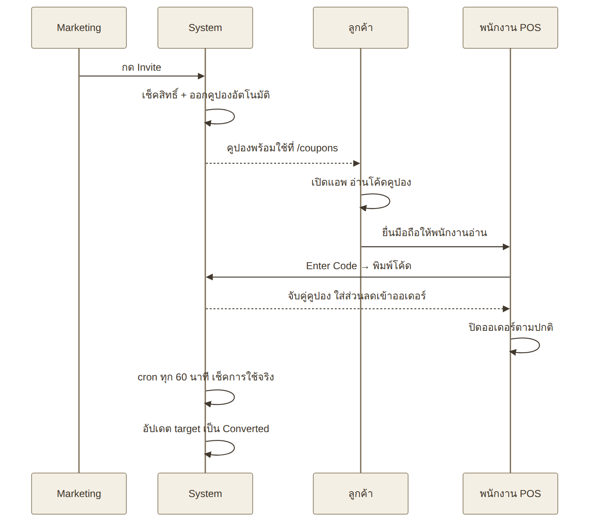
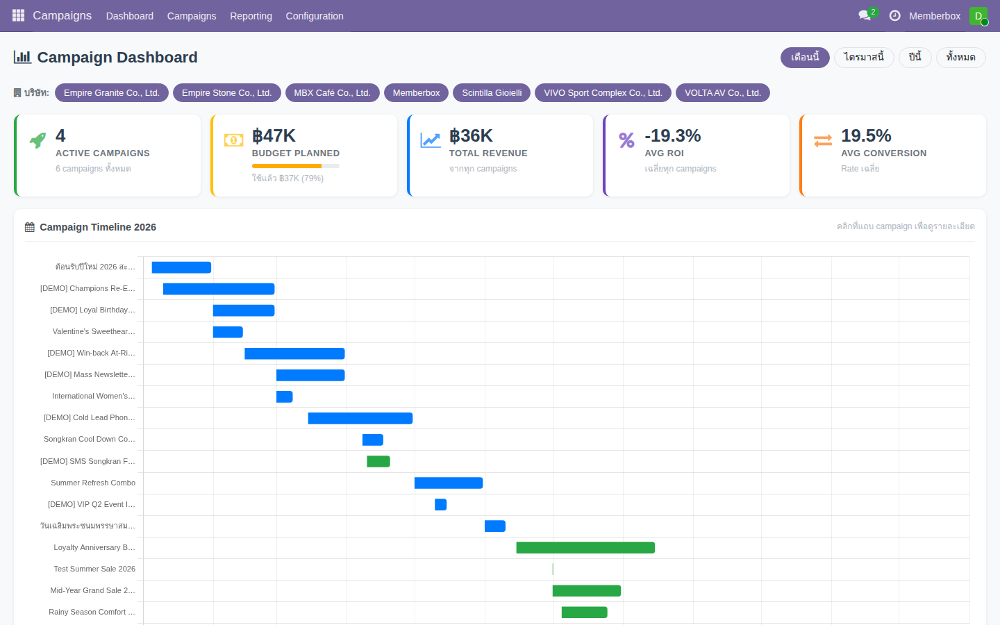
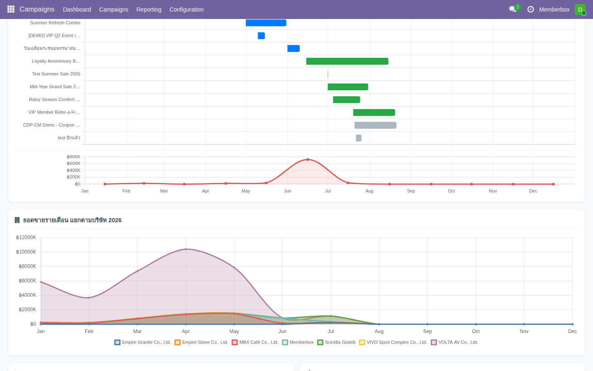
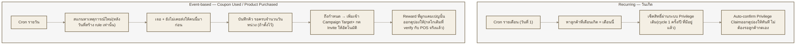

คู่มือการใช้งานระบบ CDP-CM
Campaign & Data Platform — Campaign Module ครอบคลุมฟีเจอร์ที่ build และ verify จริงบน production (odoo19-mbxai) เรียงตามลำดับที่ใช้งานจริง: ตั้งค่าแคมเปญ → ลูกค้าได้รับ/ใช้สิทธิ์ → ดูผลที่ dashboard → ตั้งระบบอัตโนมัติ
รูปทั้งหมดในคู่มือนี้ (Backend: Campaign / Reward / Segment / Dashboard / Automated Journey, หน้า /coupons ของแอพสมาชิก, และหน้าจอ POS ตอน Enter Code) capture จากการทดสอบจริงทั้งหมด — รวมถึงธุรกรรม POS ที่ชำระเงินจริงจนคูปองถูกใช้จริง ไม่ใช่ mockup ทั้งเล่ม
3 ส่วนที่ต้องตั้งค่าให้เข้าคู่กัน
กำหนด "ใครคือกลุ่มเป้าหมาย" — เมนู Campaigns (CDP-CM)
กำหนด "สิทธิ์/ของรางวัล" ที่จะแจก และผูกจำกัดเฉพาะคนใน Campaign — เมนู Sales → Loyalty Programs
จุดที่ลูกค้า "ใช้สิทธิ์จริง" ที่หน้าร้าน
สารบัญ
ภาพรวมระบบและ Flow รวม
Flow รวมทั้งระบบตั้งแต่สร้างแคมเปญจนถึงลูกค้าใช้สิทธิ์จริง — ใครทำอะไรที่ไหน
การตั้งค่า Campaign แต่ละประเภท
วิธีตั้งค่า Campaign ทั้ง 7 รูปแบบ พร้อมระบุว่าแบบไหนใช้งานได้เต็มรูปแบบแล้ว แบบไหนยังต้องพัฒนาเพิ่ม
Customer Journey — รับคูปองถึงใช้งาน
มุมมองฝั่งลูกค้า: ได้รับเชิญ → คูปองออกอัตโนมัติ → เปิดแอพดูคูปอง → พนักงานพิมพ์โค้ดที่ POS
Dashboard และการวัดผล
อ่านผล Dashboard: KPI, Funnel, ยอดขายรายเดือนแยกบริษัท, Engagement
Automated Journey — ระบบส่งสิทธิ์อัตโนมัติ
ตั้งกฎให้ระบบส่งคูปอง/สิทธิ์ให้ลูกค้าเองอัตโนมัติ — วันเกิด, coupon chain, product-purchase trigger
CDP-CM (mx_campaign) เป็น Campaign Module ที่ทำงานกับลูกค้าทั่วไปแบบกว้าง ส่วน MXP (mbx_frontend) เป็น Membership Platform เฉพาะสมาชิก — ทั้งสองเชื่อมกันตรงจุดที่ Reward/Privilege ถูกจำกัดสิทธิ์ให้เฉพาะคนใน Campaign Target list เท่านั้น
ภาพรวมระบบและ Flow รวม
Flow รวมทั้งระบบ

ใครทำอะไรที่ไหน
| ขั้นตอน | ทำโดย | ทำที่ไหน |
|---|---|---|
| สร้างแคมเปญ + เพิ่ม targets | Marketing / Campaign Manager | เมนู Campaigns → Campaigns |
| ตั้งค่า Reward + ผูกแคมเปญ | Marketing / Campaign Manager | Sales → Loyalty Programs → tab MBX Membership |
| กด Invite | Marketing / Campaign Manager | ฟอร์มแคมเปญ → tab Targets → ปุ่ม Invite |
| รับคูปอง | ลูกค้า (สมาชิก) | แอพสมาชิก หน้า /coupons |
| ใช้สิทธิ์ | ลูกค้า + พนักงานหน้าร้าน | POS — Enter Code |
| ติดตามผล | Marketing | Campaigns → Dashboard / Reporting |
สถานะ Journey ของ Target
แต่ละคนใน target list มีสถานะเดินหน้าเรื่อยๆ ไม่ย้อนกลับ (ยกเว้นถูกยกเลิก):
Draft → Invited → Responded → Converted (หรือ Lost ถ้ามาร์คด้วยมือ)
- Draft — อยู่ใน target list แล้ว แต่ยังไม่ถูกเชิญ
- Invited — เชิญแล้ว ระบบพยายามออกคูปองให้อัตโนมัติทันที
- Responded — ลูกค้ากดรับคูปอง/สิทธิ์แล้ว (อัปเดตอัตโนมัติตอนออกคูปองสำเร็จ)
- Converted — ลูกค้าใช้คูปองจริงแล้วที่ POS (อัปเดตอัตโนมัติผ่าน cron ทุก 60 นาที)
ตัวเลข Sent / Opened(Claimed) / Redemptions(Converted) ที่เห็นใน Dashboard และหน้า Campaign นับจากสถานะเหล่านี้โดยตรง

ถ้าเพิ่ม target เข้าแคมเปญที่ Invite ไปแล้วก่อนหน้านี้ ต้องกด Invite ให้ target ใหม่เหล่านั้นเองอีกครั้ง ระบบไม่ auto-invite ให้
ถ้ากด Invite ไปแล้วแต่ยังไม่มี Reward ผูกแคมเปญ ลูกค้าจะเข้าสถานะ Invited เฉยๆ โดยไม่มีคูปองออกให้ — ต้องไปตั้งค่า Reward ให้เสร็จก่อน แล้วค่อยกด Invite
การตั้งค่า Campaign แต่ละประเภท
ขั้นตอนพื้นฐาน (เหมือนกันทุกประเภท)
ไม่ว่าจะทำแคมเปญแบบไหน ต้องผ่าน 4 ขั้นตอนนี้เสมอ — ส่วนที่ต่างกันในแต่ละประเภทคือ วิธีเลือก Target (ขั้นตอนที่ 2) เท่านั้น
-
1
เมนู Campaigns → Campaigns → New — กรอก Name, Type (ต้องมี Campaign Type อย่างน้อย 1 อันไว้ก่อน), Start/End Date

เลย์เอาต์ใหม่ (2026-07-23) — Campaign Details + Schedule เท่านั้นที่อยู่บนสุด หน้าฟอร์มจัดใหม่ 2026-07-23เดิมข้อมูล Budget, Goals, Funnel Performance เรียงยาวอยู่บนสุดทั้งหมด ตอนนี้ส่วนบนเหลือแค่ Campaign Details + Schedule (สิ่งที่จำเป็นตอนสร้างแคมเปญ) ส่วนที่เหลือย้ายไป tab Overview (แท็บแรก ก่อน Targets) คลิกเดียวเห็นครบเหมือนเดิม ไม่มีข้อมูลหาย
-
2
ปุ่ม Add Targets บนฟอร์มแคมเปญ — เลือกโหมด แล้วดูรายละเอียดตามประเภทด้านล่าง

-
3
ตั้งค่า Reward ที่เมนู Sales → Loyalty Programs → เปิด Reward → tab MBX Membership → กลุ่ม "Restrict to Campaign(s)" → เลือกแคมเปญนี้

-
4
กลับมาที่แคมเปญ → tab Targets → เลือกแถว (หรือทั้งหมด) → ปุ่ม Invite
Select Customers Manually (เลือกทีละคน), From Segment (Domain Filter) (กรองด้วยเงื่อนไข), From CRM Leads (ดึงจาก Lead) — ถ้าจำนวนลูกค้าที่เพิ่มเกิน 2,000 คนในครั้งเดียว ระบบจะคิวเป็น Background Import Job แทนการเพิ่มทันที ดูสถานะได้ที่ปุ่ม Import Jobs
loyalty.program ทุกตัวจะ default ผูก Company เป็นบริษัทที่ user active อยู่ตอนสร้าง (ไม่มี UI เตือน) — ถ้าเผลอปล่อยไว้ โปรแกรมนั้นจะมองไม่เห็นที่ POS ของบริษัทอื่นเลย โปรแกรม Coupon/Privilege ที่ใช้ร่วมกับ CDP-CM ควรเป็นสิทธิ์ข้ามบริษัททั้งเครือ จึงต้องเคลียร์ field Company ให้ว่างเปล่า (global) เสมอทุกครั้งที่สร้างใหม่
สรุปสถานะทั้ง 7 ประเภท
| # | ประเภท | สถานะ | วิธี Target หลัก |
|---|---|---|---|
| 1 | Welcome (สมาชิกใหม่) | พร้อมใช้ | Segment Filter ตามวันที่สมัคร |
| 2 | Birthday | พร้อมใช้ | Segment Filter / Automated Journey |
| 3 | Tier (ระดับสมาชิก) | พร้อมใช้ | Segment Filter ตาม Pricelist Level |
| 4 | Personalize | พร้อมใช้ | Select Customers Manually |
| 5 | Inactive Member | พร้อมใช้ | Segment สำเร็จรูป "Inactive Member" |
| 6 | Active Member | พร้อมใช้ | Segment สำเร็จรูป "Active Member" |
| 7 | Top Spender | พร้อมใช้ | Segment สำเร็จรูป "Top Spender" — Top 50 |
1. Welcome Campaign (สมาชิกใหม่)
ใช้ Segment Filter — เมนู Configuration → Customer Segments → New: Domain Membership Joined At มากกว่าหรือเท่ากับ N วันที่แล้ว (field จริงคือ mbx_membership_joined_at)

ที่ Reward ฝั่ง MXP ยังมีเงื่อนไขซ้อนอีกชั้นคือ Privilege Condition = "New Member" — สองชั้นนี้ควรตั้งจำนวนวันให้ตรงกัน เพื่อไม่ให้ target list กว้าง/แคบกว่าเงื่อนไขจริงที่ reward เช็ค
2. Birthday Campaign
ใช้ Segment Filter — Domain: Birth Date เดือนตรงกับเดือนปัจจุบัน — Reward ฝั่ง MXP มี Privilege Condition = "Birthday Month" เช็คซ้ำอัตโนมัติอยู่แล้วตอนกดรับ segment filter ฝั่ง campaign ทำหน้าที่แค่ "เลือกกลุ่มเพื่อยิง Invite" เท่านั้น
วิธี Segment Filter ยังต้องกลับมากด Add Targets ทุกต้นเดือนเอง — ถ้าต้องการให้ระบบส่งคูปองวันเกิดให้เองอัตโนมัติทุกเดือนโดยไม่ต้องกดมือเลย ใช้โมดูลใหม่ Automated Journey แทนได้ (2026-07-23) เป็นคนละกลไกกัน ไม่ผ่าน Campaign Target เลย แต่ auto-confirm privilege claim ให้ลูกค้าตรงๆ ทุกเดือน
3. Tier Campaign (ระดับสมาชิก)
ใช้ Segment Filter — Domain: property_product_pricelist → mbx_level เท่ากับ level ที่ต้องการ — ระดับสมาชิกผูกอยู่กับ Pricelist ที่ partner แต่ละคนถูก assign ไว้ ใช้ทำโปรโมชั่นเฉพาะระดับ เช่น "Level 8-10 รับสิทธิ์พิเศษ"
4. Personalize Campaign
ใช้ Select Customers Manually — เลือกลูกค้าทีละคน/กลุ่มเล็กด้วยมือ เหมาะกับแคมเปญเฉพาะกิจ ไม่มีเงื่อนไขที่ระบุเป็นกฎตายตัวได้
5. Inactive Member Campaign
ใช้ Segment Filter — เลือก segment สำเร็จรูป "Inactive Member (No Order in 90+ Days)" ได้เลย ครอบคลุมทั้งคนที่ซื้อครั้งสุดท้ายเกิน 90 วัน และคนที่ไม่เคยซื้อเลย
เบื้องหลัง: ระบบมี field ใหม่บน res.partner — Last Order Date และ Purchase Status คำนวณจาก confirmed sale order อัตโนมัติทุกคืนผ่าน cron "Campaign: Refresh Customer Purchase Stats"
6. Active Member Campaign
ใช้ Segment Filter — เลือก segment สำเร็จรูป "Active Member (Last Order ≤ 90 Days)" — ใช้ field/cron ชุดเดียวกับ Inactive Member
7. Top Spender Campaign
ใช้ Segment Filter — เลือก segment สำเร็จรูป "Top Spender (Last 90 Days)" ต่างจาก 2 ประเภทบนตรงที่เป็นการจัดอันดับ: มี field เสริม "Sort By" (mx_spend_90d desc) + "Limit" (ตั้งไว้ 50) — ปรับเป็น Top 100/Top 20 แก้ที่ field "Limit" ได้ตรงๆ ไม่ต้องแก้โค้ด
ตัวเลข "90 วัน" เป็นค่าคงที่ในโค้ด (PURCHASE_ACTIVE_WINDOW_DAYS ใน res_partner.py) เปลี่ยนได้แต่ต้องแก้โค้ด+อัปเกรดโมดูลใหม่ ไม่ใช่ค่าที่ปรับได้จากหน้าจอ
Customer Journey — จากได้รับเชิญถึงใช้สิทธิ์จริง
บทนี้มองจากมุมลูกค้า (สมาชิก) ตั้งแต่วินาทีที่ทีม Marketing กด Invite จนถึงพนักงานหน้าร้านปิดออเดอร์
ตั้งใจให้ลูกค้ายื่นจอมือถือให้พนักงาน scan ที่ POS จึงทำ Barcode Rule ฝั่ง POS ไว้รองรับแล้ว แต่ทดสอบจริงพบว่าหน้า /coupons ที่ deploy อยู่ตอนนี้แสดงโค้ดเป็นตัวอักษรธรรมดาเท่านั้น ไม่มี QR/Barcode ให้สแกน — ใช้วิธี "พนักงานอ่านโค้ดจากจอลูกค้าแล้วพิมพ์เอง" ไปก่อน ตัดสินใจแล้วว่าจะพักเรื่องนี้ไว้ก่อน รอเลือกเครื่องสแกนที่จะใช้จริงหน้าร้าน
ทดสอบ redeem จริงที่ MBX Café POS ครบ flow — พิมพ์โค้ด → ส่วนลดขึ้น → ชำระเงิน → คูปองถูกใช้จริง — screenshot ด้านล่างทั้งหมดมาจากธุรกรรมจริงนี้
ขั้นตอนที่ 1 — ระบบออกคูปองให้อัตโนมัติ
ทันทีที่ทีม Marketing กด Invite ระบบจะ: เช็คว่ามี Reward ตัวไหนผูก "Restrict to Campaign" กับแคมเปญนี้บ้าง → เช็คสิทธิ์ลูกค้าคนนี้ตามเงื่อนไขของ Reward → ถ้าผ่านเงื่อนไข ออกคูปองให้ทันที ไม่ต้องให้ลูกค้าเปิดแอพมากดรับเอง → อัปเดตสถานะ target เป็น Responded ทันที
ระบบจะไม่ error และไม่บล็อกการ invite — target ยังคงสถานะ Invited และไม่มีคูปองออกให้ ตรวจสอบสาเหตุได้จากหน้า Privilege Claims (สถานะ Draft พร้อมบันทึกเหตุผลในช่อง Note)
ขั้นตอนที่ 2 — ลูกค้าเปิดแอพดูคูปอง
ลูกค้าเข้าแอพสมาชิกที่หน้า /coupons — เห็นคูปองทั้งหมดที่ตัวเองมีสิทธิ์เป็นการ์ดแบบ grid พร้อม tab กรองตามสถานะ, เรียงลำดับได้, แต่ละการ์ดแสดงโค้ดคูปองเป็นตัวอักษรตรงๆ (เช่น CDPDEMOC-C5ED1A9D0F)

ขั้นตอนที่ 3 — พนักงานพิมพ์โค้ดที่ POS
- 1
เพิ่มสินค้าลงตะกร้า + ระบุลูกค้าตามปกติ แล้วกดปุ่ม "⋮" (More/Actions) มุมล่างซ้าย

- 2
กด "Enter Code" เปิดช่องกรอกโค้ด (auto-focus พิมพ์ได้ทันที)

- 3
ให้ลูกค้าอ่านโค้ดตัวอักษร (หรือยื่นจอให้ดู) พนักงานพิมพ์เข้าไปตรงๆ กด Apply — ระบบจับคู่คูปองใส่ส่วนลดเข้าออเดอร์ทันที

เพิ่ม Barcode Rule "MBX Coupon Codes" ไว้แล้วให้ POS รู้จักรูปแบบโค้ด MBX (PREFIX-XXXXXXXXXX) ทันทีที่หน้า /coupons มี QR/Barcode ให้สแกนจริงเมื่อไหร่ ฝั่ง POS พร้อมใช้งานได้เลยไม่ต้องแก้อะไรเพิ่ม
ขั้นตอนที่ 4 — ปิดออเดอร์ตามปกติ
พนักงานคิดเงินต่อตามปกติ ไม่มีขั้นตอนพิเศษเพิ่มเติม คูปองจะถูกใช้ (points เหลือ 0) ทันทีที่ออเดอร์เสร็จสมบูรณ์ ใบเสร็จแสดงบรรทัดส่วนลดจากคูปองด้วย

ขั้นตอนที่ 5 — ระบบอัปเดตสถานะแคมเปญให้อัตโนมัติ
การใช้คูปองที่ POS เกิดนอกระบบ CDP-CM โดยตรง จึงมี cron ทำงานทุก 60 นาที คอยเช็คว่าคูปองที่ออกไปแล้วถูกใช้หรือยัง — ถ้าใช้แล้ว จะอัปเดต target เป็น Converted ให้อัตโนมัติ (ไม่เกิน 1 ชั่วโมงหลังใช้จริง)
สรุป Flow เต็ม (มุมมองลูกค้า)

Dashboard และการวัดผล
เมนู Campaigns → Dashboard
Filter บนสุด — มีผลกับทุกอย่างในหน้านี้
| Filter | ทำอะไร |
|---|---|
| Date Range (Month/Quarter/Year/All) | กรองช่วงเวลาของ KPI, Revenue by Campaign, Status, Conversion by Type, Top Campaigns |
| Company (แถบ pill ด้านบน) | เลือกได้หลายบริษัทพร้อมกัน ค่าเริ่มต้น = ทุกบริษัทที่ user มีสิทธิ์เห็น — มีผลกับทุก card ในหน้า |

Card นี้แสดงย้อนหลัง 30 วันเสมอไม่ว่าจะเลือก Date Range เป็นอะไร (แต่ยังกรองตาม Company filter ตามปกติ)
แถว KPI (บนสุด)
| การ์ด | ความหมาย |
|---|---|
| Active Campaigns | จำนวนแคมเปญสถานะ Active ในช่วงเวลา+บริษัทที่เลือก |
| Budget Planned | งบที่ตั้งไว้รวมทุกแคมเปญในช่วงที่เลือก |
| Total Revenue | รายได้ที่ผูกกับแคมเปญ |
| Avg ROI | ค่าเฉลี่ย (Revenue − Budget Spent) / Budget Spent |
| Avg Conversion | ค่าเฉลี่ย % target ที่ถึงสถานะ Converted |
Campaign Timeline + Revenue Trend
Gantt แสดงช่วงเวลาแคมเปญแต่ละอันในปีปัจจุบัน คู่กับกราฟเส้น Revenue รายเดือน (12 เดือน ปีปัจจุบัน)
ดึงจาก Sale Order ที่ระบุแคมเปญ (mx_campaign_id) และยืนยันแล้วเท่านั้น — ถ้าลูกค้าซื้อของโดยไม่ได้มาจากแคมเปญไหนเลย ยอดนั้นจะไม่รวมอยู่ในเส้นนี้
ยอดขายรายเดือน แยกตามบริษัท
Chart ใหม่ — แสดงยอดขายทั้งหมดของบริษัท (ทุกออเดอร์ที่ยืนยันแล้ว ไม่จำกัดว่าต้องผูกแคมเปญ) แยกเป็นชั้นตามบริษัท ใช้เทียบสัดส่วนว่า "ยอดขายจากแคมเปญ" คิดเป็นกี่ % ของยอดขายทั้งหมดในแต่ละเดือน

Revenue by Campaign + Status Distribution
Revenue by Campaign — บาร์ชาร์ท เรียงแคมเปญที่ทำรายได้เยอะสุด 10 อันดับแรก · Status Distribution — พายชาร์ท สัดส่วนแคมเปญตามสถานะ
Engagement Distribution
| ระดับ | เงื่อนไข |
|---|---|
| Champion | Converted ≥ 2 ครั้ง และติดต่อล่าสุดภายใน 30 วัน |
| Hot | Converted ≥ 1 ครั้ง และติดต่อล่าสุดภายใน 60 วัน |
| Warm | เคยอยู่ในแคมเปญอย่างน้อย 1 ครั้ง และติดต่อล่าสุดภายใน 90 วัน |
| Cold | นอกเหนือจากเงื่อนไขข้างต้น |
Smart Insights & รายละเอียดแคมเปญ
กล่องข้อความสรุปข้อสังเกตอัตโนมัติ (rule-based ไม่ใช่ AI จริง) เทียบกิจกรรม 30 วันล่าสุดกับ 30 วันก่อนหน้า — ใช้เป็นจุดเริ่มสังเกตความผิดปกติ ไม่ใช่บทสรุปที่ต้องเชื่อทั้งหมด คลิกที่แคมเปญจะเปิด Drawer ด้านข้างแสดงรายละเอียดเจาะลึกโดยไม่ต้องออกจากหน้า Dashboard
Automated Journey — ระบบส่งสิทธิ์อัตโนมัติ
ตั้งกฎครั้งเดียว ระบบทำงานให้เองต่อเนื่อง ไม่ต้องกลับมากดมือทุกครั้ง
| สถานการณ์ | Trigger | ตัวอย่าง |
|---|---|---|
| วันเกิดลูกค้า | Recurring (รายเดือน) | ทุกต้นเดือน ลูกค้าที่เกิดเดือนนี้ได้รับคูปองวันเกิดอัตโนมัติ |
| ใช้คูปอง A → ได้ B ต่อ | Event: Coupon Used | ใช้คูปองต้อนรับที่ POS แล้ว ได้คูปองที่ 2 ตามมาไม่กี่วันให้หลัง |
| ซื้อสินค้า A → ได้คูปอง X | Event: Product Purchased | ซื้อสินค้าตัวที่ตั้งไว้ครั้งแรก ได้คูปองพิเศษกลับมา |
ไม่ว่ากรณีไหน ระบบจะออกให้ครั้งแรกที่เข้าเงื่อนไขเท่านั้น ไม่ส่งซ้ำ (วันเกิด = ปีละ 1 ครั้งตามรอบปี, coupon/product trigger = ครั้งแรกที่ทำครั้งเดียวตลอดไป)
กลไกเบื้องหลัง (คนละแบบกันโดยตั้งใจ)

- Recurring ไม่ผ่าน Campaign/Campaign Target เลย — อ้างอิง Privilege Reward ตรงๆ ใช้ระบบ "1 สิทธิ์ต่อปี" ที่มีอยู่แล้วในระบบ MXP privilege claim (ตัวเดียวกับที่ลูกค้ากดรับเองใน
/coupons) ต่างกันแค่ระบบกดแทนให้ - Event-based ผ่าน Campaign Target เหมือน flow ปกติทุกอย่าง (ดู บทที่ 1) — rule แค่เป็นตัวช่วย "กด Invite" ให้อัตโนมัติแทนคน ต้องมี Campaign + Reward ที่ผูก "Restrict to Campaign" ไว้ก่อนเหมือนเดิม
Event-based rule จะนับเฉพาะเหตุการณ์ที่เกิดหลังจากวันที่สร้าง ruleเท่านั้น — เปิด rule ใหม่จะไม่ไปดึงประวัติการซื้อ/การใช้คูปองเก่าย้อนหลังมา enroll ทั้งหมดทันที (ป้องกันส่งคูปองจำนวนมากผิดคาดตอนเปิดใช้งานครั้งแรก)
วิธีตั้งค่า
เมนู Campaigns → Configuration → Automated Journey Rules → New
แบบ Recurring (วันเกิด)
- เลือก Trigger Type = Recurring
- เลือก Privilege Reward to Auto-Claim — ต้องเป็น Reward ที่เปิด "Enable Privilege Claim" ไว้แล้ว และตั้ง Privilege Condition = Birthday Month — ระบบใช้ Limit Period ของ reward นั้นเป็นตัวกันไม่ให้ออกซ้ำ (ปกติตั้ง "Per Year")

แบบ Event-based (Coupon Used / Product Purchased)
- เลือก Trigger Type = Event-based
- เลือก Target Campaign — แคมเปญที่จะเพิ่มลูกค้าเข้าไปเมื่อเข้าเงื่อนไข (ต้องมี Reward ผูก "Restrict to Campaign" ไว้แล้ว)
- เลือก Event Source:
Coupon Used→ เลือก Source Coupon Program, หรือProduct Purchased→ เลือก Source Product - ตั้ง Delay (days) — 0 = ส่งทันทีที่ตรวจพบ, ใส่ตัวเลข = หน่วงกี่วันก่อนค่อยเพิ่มเข้าแคมเปญ

ดูประวัติการทำงาน
เมนู Campaigns → Reporting → Automation Log — แสดงว่ากฎไหนทำงานกับลูกค้าคนไหนเมื่อไหร่
| สถานะ | ความหมาย |
|---|---|
| Scheduled | ตรวจพบเหตุการณ์แล้ว กำลังรอถึงวันที่กำหนด (delay) |
| Done | ดำเนินการเสร็จแล้ว (ออกคูปอง / เพิ่มเข้าแคมเปญสำเร็จ) |
| Skipped | พยายามแล้วแต่ไม่ผ่านเงื่อนไข (เช่น รับสิทธิ์ครบโควต้าปีนี้ไปแล้ว) |

Recurring รันทุกวันที่ 1 ของเดือน, Event-based รันทุกวัน — ถ้าเพิ่งสร้าง rule จะยังไม่เห็นแถวจนกว่าจะถึงรอบ cron ถัดไป